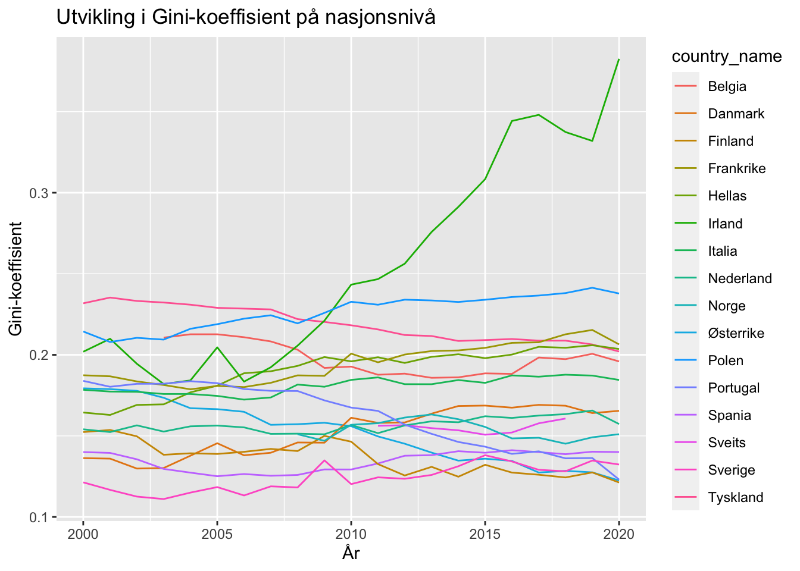
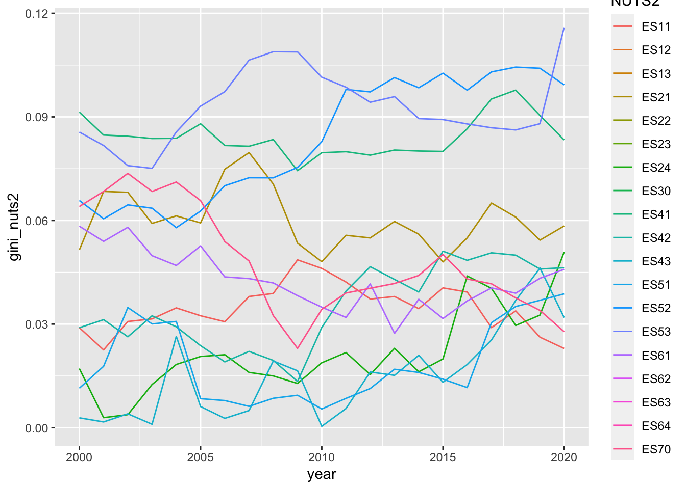
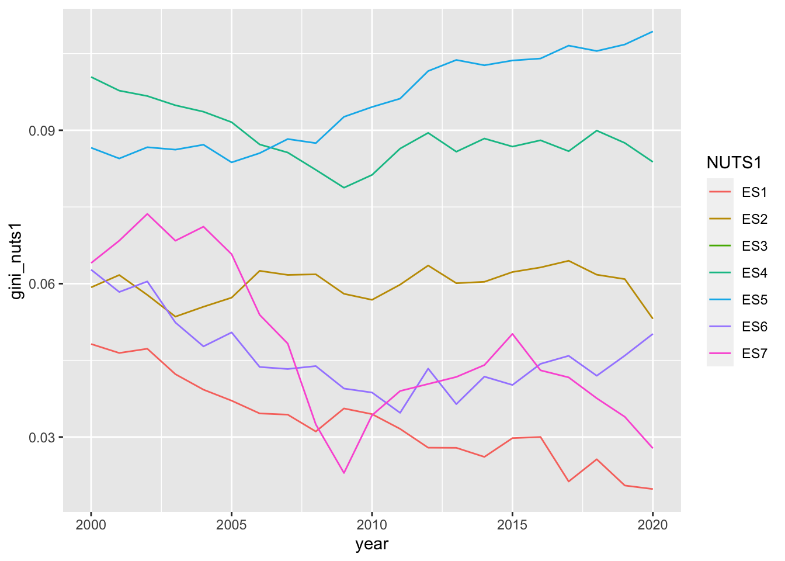
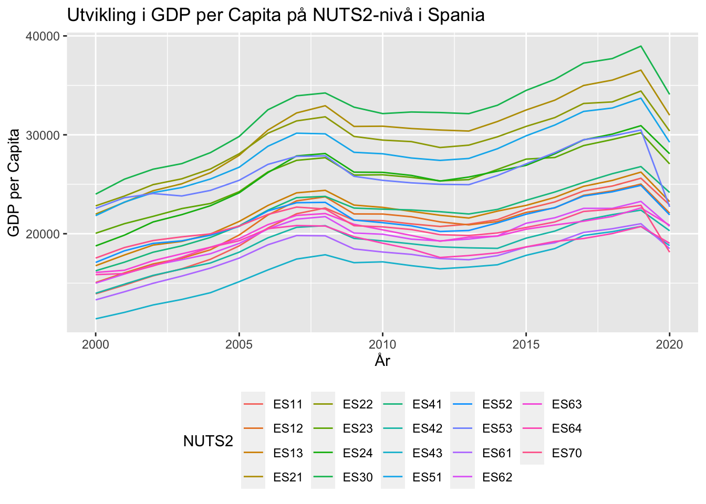
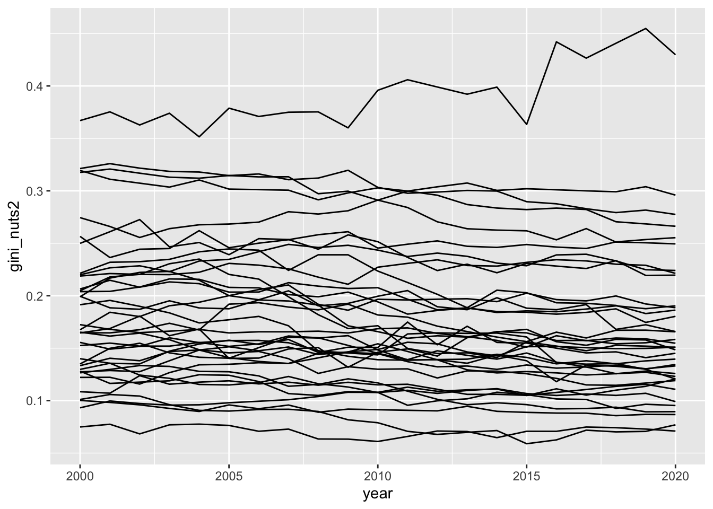
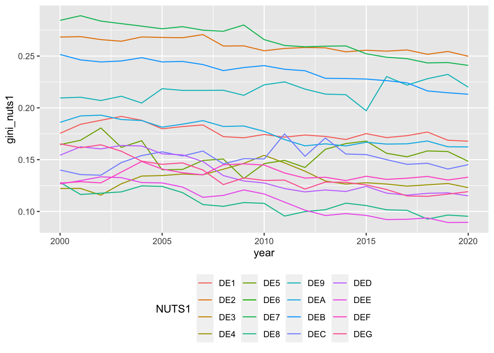
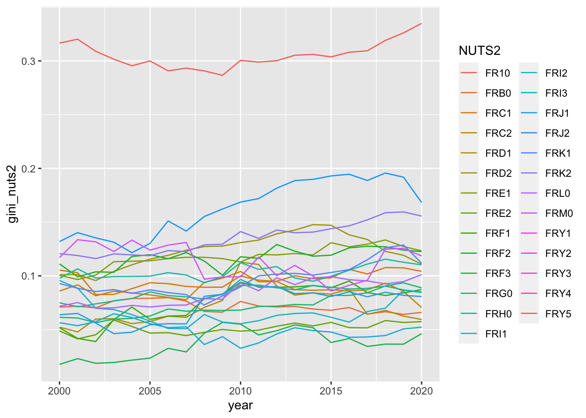
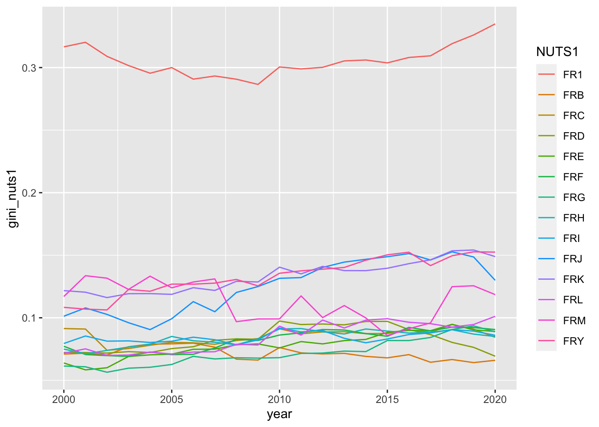
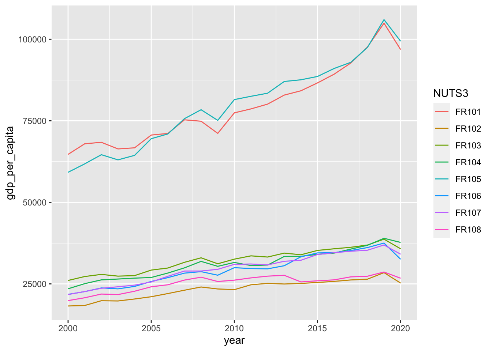

library(tidyverse)
library(readxl)
library(restatapi)
library(DescTools)
library(ggrepel)
library(flextable)
library(modelr)
library(plm)
library(broom)
library(sandwich)Assignment 4 DS
# xml skal ha mer detaljert info
# toc_xml <- get_eurostat_toc()
2[1] 2# tekstversjonen har trolig nok info for vårt formål
toc_txt <- get_eurostat_toc(mode = "txt")gdp_tabs <- toc_txt |>
# Regex AND external to regex
filter(
str_detect(
string = title,
# For å matche både små og store bokstaver
pattern = '[Gg][Dd][Pp]'
# AND vha. &
) &
str_detect(
string = title,
# For å matche både små og store bokstaver og
# space eller ikke før 3
pattern = '[Nn][Uu][Tt][Ss]\\s*3'
)
) |>
select(title, code)Vi finner fire tabeller listet i toc_txt.
gdp_tabs |>
select(title, code) |>
flextable() |>
width(1, width = 3.5) |>
width(2, width = 1.5)title | code |
|---|---|
Average annual population to calculate regional GDP data (thousand persons) by NUTS 3 regions | nama_10r_3popgdp |
Gross domestic product (GDP) at current market prices by NUTS 3 regions | nama_10r_3gdp |
European Union trade mark (EUTM) applications per billion GDP by NUTS 3 regions | ipr_ta_gdpr |
Community design (CD) applications per billion GDP by NUTS 3 regions | ipr_da_gdpr |
Vi laster så ned «Data Structure Definition (DSD)» for tabellen med code nama_10r_3gdp
# description nama_10r_3gdp
dsd_gdp <- get_eurostat_dsd("nama_10r_3gdp")
dsd_gdp |>
head(n = 15) |>
flextable() |>
width(1, width = 1) |>
width(2, width = 1) |>
width(3, width = 3.5)concept | code | name |
|---|---|---|
freq | A | Annual |
unit | MIO_EUR | Million euro |
unit | EUR_HAB | Euro per inhabitant |
unit | EUR_HAB_EU27_2020 | Euro per inhabitant in percentage of the EU27 (from 2020) average |
unit | MIO_NAC | Million units of national currency |
unit | MIO_PPS_EU27_2020 | Million purchasing power standards (PPS, EU27 from 2020) |
unit | PPS_EU27_2020_HAB | Purchasing power standard (PPS, EU27 from 2020), per inhabitant |
unit | PPS_HAB_EU27_2020 | Purchasing power standard (PPS, EU27 from 2020), per inhabitant in percentage of the EU27 (from 2020) average |
geo | EU27_2020 | European Union - 27 countries (from 2020) |
geo | BE | Belgium |
geo | BE1 | Région de Bruxelles-Capitale/Brussels Hoofdstedelijk Gewest |
geo | BE10 | Région de Bruxelles-Capitale/Brussels Hoofdstedelijk Gewest |
geo | BE100 | Arr. de Bruxelles-Capitale/Arr. Brussel-Hoofdstad |
geo | BE2 | Vlaams Gewest |
geo | BE21 | Prov. Antwerpen |
Utfra kodene i dsd_gdp kan vi da formulere følgende spørring mot Eurostat:
# ag_comment: Satt eval til false ellers kjører samme kode to ganger
# Gross domestic product (GDP) at current market prices by NUTS 3 regions
# id: nama_10r_3gdp
nama_10r_3gdp <- get_eurostat_data(
id = "nama_10r_3popgdp",
filters = list(
geo = c("AT", "DE", "DK", "FR", "EL", "ES",
"IT", "NL", "BE", "IE", "PL", "PT", "NO", "SE", "FI", "CH"),
nuts_level = "3",
unit = "MIO_PPS_EU27_2020"
),
exact_match = FALSE,
date_filter = 2000:2020,
stringsAsFactors = FALSE
) |>
mutate(
gdp = 1000000 * values
) |>
select(-c(unit, values)) |>
# Vil bare ha NUTS 3 nivå (5 karakterer). Vil aggregere selv til NUTS2,
# NUTS1 og NUTSc
filter(str_length(geo) == 5)Oppgave 1)
# id: nama_10r_3gdp
nama_10r_3gdp <- get_eurostat_data(
id = "nama_10r_3gdp",
filters = list(
geo = c("AT", "DE", "DK", "FR", "EL", "ES",
"IT", "NL", "BE", "IE", "PL", "PT", "NO", "SE", "FI", "CH"),
nuts_level = "3",
unit = "MIO_PPS_EU27_2020"
),
exact_match = FALSE,
date_filter = 2000:2020,
stringsAsFactors = FALSE
) |>
mutate(
gdp = 1000000 * values
) |>
select(-c(unit, values)) |>
# Vil bare ha NUTS 3 nivå (5 karakterer). Vil aggregere selv til NUTS2,
# NUTS1 og NUTSc
filter(str_length(geo) == 5)Oppgave 2)
i. Fant koden nama_10r_3popgdp for tabellen med forklarende tekst «Average annual population to calculate regional GDP data (thousand persons) by NUTS 3 regions».
ii.
# ndefineddescription nama_10r_3popgdp
dsd_popgdp <- get_eurostat_dsd("nama_10r_3popgdp")
dsd_popgdp |>
head(n = 15) |>
flextable() |>
width(1, width = 1) |>
width(2, width = 1) |>
width(3, width = 3.5)concept | code | name |
|---|---|---|
freq | A | Annual |
unit | THS | Thousand |
geo | EU27_2020 | European Union - 27 countries (from 2020) |
geo | BE | Belgium |
geo | BE1 | Région de Bruxelles-Capitale/Brussels Hoofdstedelijk Gewest |
geo | BE10 | Région de Bruxelles-Capitale/Brussels Hoofdstedelijk Gewest |
geo | BE100 | Arr. de Bruxelles-Capitale/Arr. Brussel-Hoofdstad |
geo | BE2 | Vlaams Gewest |
geo | BE21 | Prov. Antwerpen |
geo | BE211 | Arr. Antwerpen |
geo | BE212 | Arr. Mechelen |
geo | BE213 | Arr. Turnhout |
geo | BE22 | Prov. Limburg (BE) |
geo | BE223 | Arr. Tongeren |
geo | BE224 | Arr. Hasselt |
iii.
# id: nama_10r_3popgdp
nama_10r_3popgdp <- get_eurostat_data(
id = "nama_10r_3popgdp",
filters = list(
geo = c("AT", "DE", "DK", "FR", "EL", "ES",
"IT", "NL", "BE", "IE", "PL", "PT", "NO", "SE", "FI", "CH"),
nuts_level = "3",
unit = "THS"
),
exact_match = FALSE,
date_filter = 2000:2020,
stringsAsFactors = FALSE
) |> mutate(
pop.x = 1000 * values
) |>
select(-c(unit, values)) |>
# Vil bare ha NUTS 3 nivå (5 karakterer). Vil aggregere selv til NUTS2,
# NUTS1 og NUTSc
filter(str_length(geo) == 5)Oppgave 3)
# description demo_r_pjanaggr3
dsd_pop <- get_eurostat_dsd("demo_r_pjanaggr3")
dsd_pop |>
head(n = 15) |>
flextable() |>
width(1, width = 1) |>
width(2, width = 1) |>
width(3, width = 3.5)concept | code | name |
|---|---|---|
freq | A | Annual |
unit | NR | Number |
sex | T | Total |
sex | M | Males |
sex | F | Females |
age | TOTAL | Total |
age | Y_LT15 | Less than 15 years |
age | Y15-64 | From 15 to 64 years |
age | Y_GE65 | 65 years or over |
age | UNK | Unknown |
geo | EU27_2020 | European Union - 27 countries (from 2020) |
geo | EU28 | European Union - 28 countries (2013-2020) |
geo | EU27_2007 | European Union - 27 countries (2007-2013) |
geo | BE | Belgium |
geo | BE1 | Région de Bruxelles-Capitale/Brussels Hoofdstedelijk Gewest |
demo_r_pjanaggr3 <- get_eurostat_data(
id = "demo_r_pjanaggr3",
filters = list(
geo = c("AT", "DE", "DK", "FR", "EL", "ES",
"IT", "NL", "BE", "IE", "PL", "PT", "NO", "SE", "FI", "CH"),
nuts_level = "3",
unit = "NR", sex = "T", age = "TOTAL"
),
exact_match = FALSE,
date_filter = 2000:2020,
stringsAsFactors = FALSE
) |>
select(-c(unit, sex, age)) |> select(geo, time, pop.y = values) |>
# Vil bare ha NUTS 3 nivå (5 karakterer). Vil aggregere selv til NUTS2,
# NUTS1 og NUTSc
filter(str_length(geo) == 5)Oppgave 4)
# Identifiser NUTS3-soner som mangler i nama_10r_3gdp
nuts3_missing_in_demo_r_pjanaggr3 <- setdiff(
nama_10r_3popgdp$geo,
demo_r_pjanaggr3$geo
)
# Vis resultatet
print(nuts3_missing_in_demo_r_pjanaggr3) [1] "DKZZZ" "ESZZZ" "ITG2D" "ITG2E" "ITG2F" "ITG2G" "ITG2H" "ITZZZ" "NLZZZ"
[10] "NO020" "NO074" "NO081" "NO082" "NO091" "NO092" "NO0A1" "NO0A2" "NO0A3"
[19] "NO0B2" "NOZZZ"Oppgave 5)
nuts3_missing_in_nama_10r_3gdp <- setdiff(
demo_r_pjanaggr3$geo,
nama_10r_3popgdp$geo
)
# Vis resultatet
print(nuts3_missing_in_nama_10r_3gdp) [1] "BE221" "BE222" "BE321" "BE322" "BE324" "BE325" "BE326" "BE327" "FRXXX"
[10] "ITG25" "ITG26" "ITG27" "ITG28" "ITG29" "ITG2A" "ITG2B" "ITG2C" "NO011"
[19] "NO012" "NO021" "NO022" "NO031" "NO032" "NO033" "NO034" "NO041" "NO042"
[28] "NO043" "NO051" "NO052" "NO053" "NO061" "NO062" "NO072" "NO073"Oppgave 6)
# Gjenomfører en full_join
full_pop_nuts3 <- full_join(demo_r_pjanaggr3, nama_10r_3popgdp, by = c("geo", "time"))
# Viser de første radene av det kombinerte datasettet
head(full_pop_nuts3) geo time pop.y pop.x
1: AT111 2001 37732 38050
2: AT111 2002 37778 37730
3: AT111 2003 37703 37650
4: AT111 2004 37640 37580
5: AT111 2005 37522 37450
6: AT111 2006 37413 37450Oppgave 7)
#Sjekker sonene i full_pop_nuts3 mot GDP Tabellen
Full_pop_nuts3_Against_GDP <- setdiff(
full_pop_nuts3$geo,
nama_10r_3popgdp$geo
)
# Vis resultatet
print(Full_pop_nuts3_Against_GDP) [1] "BE221" "BE222" "BE321" "BE322" "BE324" "BE325" "BE326" "BE327" "FRXXX"
[10] "ITG25" "ITG26" "ITG27" "ITG28" "ITG29" "ITG2A" "ITG2B" "ITG2C" "NO011"
[19] "NO012" "NO021" "NO022" "NO031" "NO032" "NO033" "NO034" "NO041" "NO042"
[28] "NO043" "NO051" "NO052" "NO053" "NO061" "NO062" "NO072" "NO073"Oppgave 8)
#Sjekker sonene i gdp tabellen mot de vi har i full_pop_nuts3
GDP_against_full_pop_nuts3 <- setdiff(
nama_10r_3gdp$geo,
full_pop_nuts3$geo
)
# Vis resultatet
print(GDP_against_full_pop_nuts3)[1] "ATZZZ" "BEZZZ" "FIZZZ" "FRZZZ" "PTZZZ" "SEZZZ"full_pop_nuts3 <- full_pop_nuts3 |>
filter(
!str_detect(
str_sub(
geo, start = 3, end = 5), "ZZZ$"
)
)
nama_10r_3gdp <- nama_10r_3gdp |>
filter(
!str_detect(
str_sub(
geo, start = 3, end = 5), "ZZZ$"
)
)oppgave 9)
full_pop_nuts3 |>
filter(geo %in% c("NO053", "NO060", "NO061")) |>
filter(time %in% 2014:2020) |>
arrange(time, geo) geo time pop.y pop.x
1: NO053 2014 261458 NA
2: NO060 2014 441193 443090
3: NO061 2014 306067 NA
4: NO053 2015 263736 NA
5: NO060 2015 NA 447910
6: NO061 2015 310093 NA
7: NO053 2016 265151 NA
8: NO060 2016 449457 452090
9: NO061 2016 313105 NA
10: NO053 2017 266274 NA
11: NO060 2017 454596 457000
12: NO061 2017 317363 NA
13: NO053 2018 266858 NA
14: NO060 2018 458742 460170
15: NO061 2018 320884 NA
16: NO053 2019 267420 NA
17: NO060 2019 462032 465910
18: NO053 2020 267642 NA
19: NO060 2020 465136 469910oppgave 10
full_pop_nuts3 <- full_pop_nuts3 |>
mutate(
pop = ifelse(
test = is.na(pop.x) == TRUE,
yes = pop.y,
no = pop.x
)
) |>
select(-pop.x, -pop.y)Oppgave 11
full_pop_nuts3 <- full_pop_nuts3 |>
mutate(
pop = ifelse(pop == 0, NA, pop)
)Oppgave 12)
eu_data <- left_join(
nama_10r_3gdp,
full_pop_nuts3,
by = c("geo", "time"),
suffix = c("gdp", "pop")
)Dette er feil tall i forhold til Arnstein sitt som er 21159 og 4. forsetter men usikker på om dette er rett.
dim(eu_data)[1] 21062 4eu_data <- eu_data |>
mutate(
country = str_sub(geo, start = 1L, end = 2L)
)eu_data |>
distinct(geo, .keep_all = TRUE) |>
group_by(country) |>
summarise(Antall = n(), .groups = "drop")# A tibble: 16 × 2
country Antall
<chr> <int>
1 AT 35
2 BE 44
3 CH 26
4 DE 401
5 DK 11
6 EL 52
7 ES 59
8 FI 19
9 FR 101
10 IE 8
11 IT 107
12 NL 40
13 NO 12
14 PL 73
15 PT 25
16 SE 21eu_data |>
summary() geo time gdp pop
Length:21062 Length:21062 Min. :8.512e+07 Min. : 8400
Class :character Class :character 1st Qu.:2.957e+09 1st Qu.: 132240
Mode :character Mode :character Median :5.342e+09 Median : 241050
Mean :1.004e+10 Mean : 373869
3rd Qu.:1.037e+10 3rd Qu.: 440690
Max. :2.606e+11 Max. :6757000
NA's :13
country
Length:21062
Class :character
Mode :character
OBS!!! formelen under fjerner alle datasett, så ikke kjør denne før oppgave 12 ses på.
#Endrer navn og rekkefølge på variabelen i eu_data vha. select().
eu_data <- eu_data |>
select(country, NUTS3 = geo, year = time, gdp, pop)
# Rydder opp
# Sletter alle objekt utenom eu_data
# don't use if you don't mean it
rm(list = setdiff(ls(), "eu_data"))Oppgave 13)
# Beregner GDP per capita
eu_data <- eu_data %>%
mutate(gdp_per_capita = round(gdp / pop, 2))eu_data |>
select(gdp_per_capita) |>
summary() gdp_per_capita
Min. : 3359
1st Qu.: 18324
Median : 23270
Mean : 25308
3rd Qu.: 29377
Max. :177427
NA's :13 Oppgave 14)
# Legger til variabelen country_name basert på verdiene i "geo"
eu_data <- eu_data %>%
mutate(
country_name = case_when(
country == "AT" ~ "Østerrike",
country == "DE" ~ "Tyskland",
country == "DK" ~ "Danmark",
country == "FR" ~ "Frankrike",
country == "EL" ~ "Hellas",
country == "ES" ~ "Spania",
country == "IT" ~ "Italia",
country == "NL" ~ "Nederland",
country == "BE" ~ "Belgia",
country == "IE" ~ "Irland",
country == "PL" ~ "Polen",
country == "PT" ~ "Portugal",
country == "NO" ~ "Norge",
country == "SE" ~ "Sverige",
country == "FI" ~ "Finland",
country == "CH" ~ "Sveits",
TRUE ~ as.character(country) # Default: Behold country som country_name hvis ingen betingelser matcher
)
)Oppgave 15)
# Lager NUTS2, NUTS1, og NUTSc
eu_data <- eu_data %>%
mutate(
NUTS2 = str_sub(NUTS3, start = 1, end = 4),
NUTS1 = str_sub(NUTS3, start = 1, end = 3),
NUTSc = str_sub(NUTS3, start = 1, end = 2)
) %>%
# Velger rekkefølge på landene
select(country_name, country, year, NUTS3, NUTS2, NUTS1, NUTSc, gdp, pop, gdp_per_capita)Oppgave 16)
gini_NUTS2 <- eu_data %>%
group_by(NUTS2, country_name, country, year) %>%
summarise(
gini_nuts2 = Gini(
x = gdp_per_capita,
weights = pop,
na.rm = TRUE
),
pop = sum(pop, na.rm = TRUE),
gdp = sum(gdp, na.rm = TRUE),
gdp_per_capita = gdp / pop,
num_nuts3 = n(),
.groups = "drop"
) %>%
select(country_name, country, NUTS2, year, pop, gdp, gdp_per_capita, num_nuts3, gini_nuts2)gini_NUTS2 |>
summary() |>
print(width = 80) country_name country NUTS2 year
Length:4193 Length:4193 Length:4193 Length:4193
Class :character Class :character Class :character Class :character
Mode :character Mode :character Mode :character Mode :character
pop gdp gdp_per_capita num_nuts3
Min. : 0 Min. :8.512e+07 Min. : 3359 Min. : 1.000
1st Qu.: 714880 1st Qu.:1.628e+10 1st Qu.:19425 1st Qu.: 2.000
Median : 1451900 Median :3.416e+10 Median :24498 Median : 4.000
Mean : 1876835 Mean :5.042e+10 Mean : Inf Mean : 5.023
3rd Qu.: 2374900 3rd Qu.:6.267e+10 3rd Qu.:30870 3rd Qu.: 7.000
Max. :12363480 Max. :6.996e+11 Max. : Inf Max. :23.000
gini_nuts2
Min. :0.0001
1st Qu.:0.0591
Median :0.1014
Mean :0.1196
3rd Qu.:0.1603
Max. :0.4547
NA's :703 gini_NUTS2 |>
select(-country_name) |>
filter(gini_nuts2 < 0.001)# A tibble: 4 × 8
country NUTS2 year pop gdp gdp_per_capita num_nuts3 gini_nuts2
<chr> <chr> <chr> <dbl> <dbl> <dbl> <int> <dbl>
1 ES ES43 2010 1100400 18879360000 17157. 2 0.000405
2 IT ITF5 2006 588300 11135870000 18929. 2 0.000545
3 NO NO07 2010 467100 13738470000 29412. 2 0.000479
4 PL PL43 2020 1010100 18762060000 18574. 2 0.000148Oppgave 17)
gini_NUTS1 <- eu_data %>%
group_by(NUTS1, country_name, country, year) %>%
summarise(
gini_nuts1 = Gini(
x = gdp_per_capita,
weights = pop,
na.rm = TRUE
),
pop = sum(pop, na.rm = TRUE),
gdp = sum(gdp, na.rm = TRUE),
gdp_per_capita = gdp / pop,
num_nuts2 = n_distinct(NUTS2),
.groups = "drop"
) %>%
select(country_name, country, NUTS1, year, pop, gdp, gdp_per_capita, num_nuts2, gini_nuts1)gini_NUTS1 |>
summary() |>
print(width = 80) country_name country NUTS1 year
Length:1545 Length:1545 Length:1545 Length:1545
Class :character Class :character Class :character Class :character
Mode :character Mode :character Mode :character Mode :character
pop gdp gdp_per_capita num_nuts2
Min. : 25740 Min. :6.815e+08 Min. : 6423 Min. :1.000
1st Qu.: 2544800 1st Qu.:5.422e+10 1st Qu.:19819 1st Qu.:1.000
Median : 4032210 Median :9.979e+10 Median :24765 Median :3.000
Mean : 5093573 Mean :1.368e+11 Mean :26180 Mean :2.714
3rd Qu.: 6076380 3rd Qu.:1.649e+11 3rd Qu.:31275 3rd Qu.:4.000
Max. :17939970 Max. :6.996e+11 Max. :63383 Max. :7.000
gini_nuts1
Min. :0.01983
1st Qu.:0.08361
Median :0.12644
Mean :0.13387
3rd Qu.:0.16753
Max. :0.39082
NA's :144 Oppgave 18)
gini_NUTSc <- eu_data %>%
group_by(NUTSc, country_name, country, year) %>%
summarise(
gini_nutsc = Gini(
x = gdp_per_capita,
weights = pop,
na.rm = TRUE
),
pop = sum(pop, na.rm = TRUE),
gdp = sum(gdp, na.rm = TRUE),
gdp_per_capita = gdp / pop,
num_nuts1 = n_distinct(NUTS1),
.groups = "drop"
) %>%
select(country_name, country, NUTSc, year, pop, gdp, gdp_per_capita, num_nuts1, gini_nutsc)gini_NUTSc |>
summary() |>
print(width = 80) country_name country NUTSc year
Length:312 Length:312 Length:312 Length:312
Class :character Class :character Class :character Class :character
Mode :character Mode :character Mode :character Mode :character
pop gdp gdp_per_capita num_nuts1
Min. : 3543470 Min. :9.547e+10 Min. : 8865 Min. : 1.000
1st Qu.: 7997358 1st Qu.:2.037e+11 1st Qu.:23421 1st Qu.: 2.000
Median :10557885 Median :3.121e+11 Median :28361 Median : 3.000
Mean :25222983 Mean :6.776e+11 Mean :28676 Mean : 4.952
3rd Qu.:43837275 3rd Qu.:1.010e+12 3rd Qu.:34222 3rd Qu.: 7.000
Max. :83161210 Max. :3.147e+12 Max. :61599 Max. :16.000
gini_nutsc
Min. :0.1110
1st Qu.:0.1430
Median :0.1691
Mean :0.1755
3rd Qu.:0.2004
Max. :0.3826 Oppgave 19)
gini_NUTS2_nest <- gini_NUTS2 |>
group_by(country_name, country) |>
nest(.key = "NUTS2_data") |>
ungroup()Oppgave 20
gini_NUTS1_nest <- gini_NUTS1 |>
group_by(country_name, country) |>
nest(.key = "NUTS1_data") |>
ungroup()Oppgave 21
gini_NUTSc_nest <- gini_NUTSc |>
group_by(country_name, country) |>
nest(.key = "NUTSc_data") |>
ungroup()Oppgave 22
# Grupper etter land og neste dataene på NUTS3-nivå
eu_data_nested <- eu_data %>%
group_by(country_name, country) %>%
nest() %>%
rename(NUTS3_data = data) %>%
ungroup()
gini_NUTS2_nest_unique <- gini_NUTS2_nest %>%
distinct(country_name, country, .keep_all = TRUE)
gini_NUTS1_nest_unique <- gini_NUTS1_nest %>%
distinct(country_name, country, .keep_all = TRUE)
gini_NUTSc_nest_unique <- gini_NUTSc_nest %>%
distinct(country_name, country, .keep_all = TRUE)
# Left join med de unike gini-datasettene
eu_data_nested <- eu_data_nested %>%
left_join(gini_NUTS2_nest_unique, by = c("country_name", "country")) %>%
left_join(gini_NUTS1_nest_unique, by = c("country_name", "country")) %>%
left_join(gini_NUTSc_nest_unique, by = c("country_name", "country"))
# Fjerner gruppestrukturen og eventuelle duplikater
eu_data_nested <- eu_data_nested %>%
ungroup() %>%
distinct(country_name, country, .keep_all = TRUE)
# Sjekk strukturen til den endelige dataframen
print(eu_data_nested)# A tibble: 16 × 6
country_name country NUTS3_data NUTS2_data NUTS1_data NUTSc_data
<chr> <chr> <list> <list> <list> <list>
1 Østerrike AT <tibble [735 × 8]> <tibble> <tibble> <tibble>
2 Belgia BE <tibble [712 × 8]> <tibble> <tibble> <tibble>
3 Sveits CH <tibble [208 × 8]> <tibble> <tibble> <tibble>
4 Tyskland DE <tibble [8,421 × 8]> <tibble> <tibble> <tibble>
5 Danmark DK <tibble [231 × 8]> <tibble> <tibble> <tibble>
6 Hellas EL <tibble [1,092 × 8]> <tibble> <tibble> <tibble>
7 Spania ES <tibble [1,239 × 8]> <tibble> <tibble> <tibble>
8 Finland FI <tibble [399 × 8]> <tibble> <tibble> <tibble>
9 Frankrike FR <tibble [2,121 × 8]> <tibble> <tibble> <tibble>
10 Irland IE <tibble [162 × 8]> <tibble> <tibble> <tibble>
11 Italia IT <tibble [2,247 × 8]> <tibble> <tibble> <tibble>
12 Nederland NL <tibble [840 × 8]> <tibble> <tibble> <tibble>
13 Norge NO <tibble [156 × 8]> <tibble> <tibble> <tibble>
14 Polen PL <tibble [1,533 × 8]> <tibble> <tibble> <tibble>
15 Portugal PT <tibble [525 × 8]> <tibble> <tibble> <tibble>
16 Sverige SE <tibble [441 × 8]> <tibble> <tibble> <tibble> Oppgave 23
# Jeg vil foreslå å heller ta data fra eu_data_nested. Trenger da ikke så mange
# objekter og det hele blir ryddigere og minsker risikoen for feil
#gini_NUTSc |>
eu_data_nested |>
unnest(NUTSc_data) |>
# ag_comment: fikser verdier horisontal akse ved å gjøre year
# om fra integer til date. Merk at det bare gjøres i pipen her, så
# year er fremdeles integer i eu_data_nested
mutate(
year = make_date(year)
) |>
ggplot(
aes(
x = year,
y = gini_nutsc,
group = country,
color = country_name
)
) +
geom_line() +
labs(title = "Utvikling i Gini-koeffisient på nasjonsnivå",
x = "År",
y = "Gini-koeffisient")
Oppgave 24
eu_data_nested |>
unnest(NUTSc_data) |>
filter(year == 2020) |>
select(country_name, gini_nutsc) |>
arrange(desc(gini_nutsc)) |>
flextable() |>
width(1, width = 1.5) |>
width(2, width = 1.5)country_name | gini_nutsc |
|---|---|
Irland | 0.3826165 |
Polen | 0.2378284 |
Frankrike | 0.2064403 |
Hellas | 0.2036007 |
Tyskland | 0.2020493 |
Belgia | 0.1959298 |
Italia | 0.1845053 |
Danmark | 0.1654528 |
Nederland | 0.1573150 |
Norge | 0.1510297 |
Spania | 0.1400519 |
Sverige | 0.1323442 |
Portugal | 0.1230546 |
Østerrike | 0.1224705 |
Finland | 0.1212452 |
eu_data_nested %>%
unnest(NUTS2_data) %>%
filter(country == "IE") %>%
filter(year == 2000:2020) %>%
select(year, NUTS2, gdp_per_capita, gini_nuts2) %>%
arrange(desc(gini_nuts2)) %>%
flextable() %>%
width(1, width = 1.5) %>%
width(2, width = 1.5)year | NUTS2 | gdp_per_capita | gini_nuts2 |
|---|---|---|---|
2020 | IE06 | 64,839.24 | 0.43423978 |
2019 | IE06 | 61,274.46 | 0.39684316 |
2014 | IE06 | 43,838.62 | 0.39008370 |
2013 | IE06 | 40,634.37 | 0.38360258 |
2020 | IE05 | 76,983.92 | 0.38215439 |
2018 | IE06 | 59,937.07 | 0.37901152 |
2017 | IE06 | 57,092.90 | 0.36839547 |
2012 | IE06 | 38,688.55 | 0.35534175 |
2016 | IE06 | 53,774.71 | 0.35346251 |
2011 | IE06 | 37,708.15 | 0.34423906 |
2015 | IE06 | 49,405.75 | 0.33548581 |
2018 | IE05 | 71,209.31 | 0.33340668 |
2010 | IE06 | 38,186.56 | 0.32317347 |
2020 | IE04 | 23,696.39 | 0.32178852 |
2019 | IE05 | 74,539.22 | 0.27480470 |
2001 | IE06 | 30,485.86 | 0.27125525 |
2009 | IE06 | 36,569.62 | 0.26782869 |
2008 | IE06 | 39,852.99 | 0.26258757 |
2005 | IE06 | 38,579.77 | 0.25673014 |
2000 | IE06 | 29,192.95 | 0.24578629 |
2012 | IE05 | 33,372.58 | 0.24476866 |
2011 | IE05 | 32,826.67 | 0.24429044 |
2007 | IE06 | 42,350.73 | 0.23501259 |
2002 | IE05 | 29,920.73 | 0.23133080 |
2003 | IE06 | 33,002.40 | 0.22778539 |
2004 | IE06 | 36,195.35 | 0.22757404 |
2006 | IE06 | 40,448.89 | 0.22348125 |
2014 | IE04 | 22,524.99 | 0.21387000 |
2014 | IE05 | 33,924.39 | 0.21325659 |
2002 | IE06 | 31,805.13 | 0.21019030 |
2016 | IE04 | 22,942.09 | 0.20662891 |
2015 | IE04 | 24,124.46 | 0.20607425 |
2010 | IE05 | 30,680.67 | 0.19852713 |
2009 | IE05 | 29,667.47 | 0.19583205 |
2012 | IE04 | 24,150.40 | 0.19386944 |
2019 | IE04 | 25,184.98 | 0.17456392 |
2013 | IE04 | 21,574.19 | 0.17280122 |
2011 | IE04 | 24,164.51 | 0.17174129 |
2001 | IE05 | 26,998.52 | 0.17157286 |
2018 | IE04 | 25,146.39 | 0.16895623 |
2010 | IE04 | 21,949.62 | 0.16571218 |
2013 | IE05 | 32,815.19 | 0.16406741 |
2003 | IE05 | 30,664.21 | 0.15978361 |
2005 | IE05 | 31,326.17 | 0.15701296 |
2007 | IE05 | 35,714.88 | 0.15286466 |
2006 | IE05 | 33,455.42 | 0.15216101 |
2017 | IE04 | 25,035.40 | 0.15140781 |
2000 | IE05 | 23,835.52 | 0.14272675 |
2004 | IE05 | 30,657.57 | 0.14181869 |
2008 | IE05 | 32,355.49 | 0.13684589 |
2001 | IE04 | 17,661.33 | 0.12956190 |
2009 | IE04 | 20,296.05 | 0.12750682 |
2000 | IE04 | 16,692.46 | 0.12312561 |
2008 | IE04 | 22,675.35 | 0.09187490 |
2004 | IE04 | 21,620.15 | 0.08109587 |
2007 | IE04 | 24,585.47 | 0.07999625 |
2005 | IE04 | 22,089.61 | 0.07961662 |
2006 | IE04 | 24,331.68 | 0.06434471 |
2002 | IE04 | 19,128.84 | 0.06318599 |
2003 | IE04 | 19,637.24 | 0.03032886 |
2015 | IE05 | 30,172.28 | |
2016 | IE05 | 29,699.72 | |
2017 | IE05 | 29,789.05 |
Oppgave 25
eu_data_nested |>
filter(country == "ES") |>
unnest(NUTS2_data) |>
mutate(year = make_date(year)) |>
ggplot(
aes(
x = year,
y = gini_nuts2,
group = NUTS2,
color = NUTS2,
)
) +
geom_line()
Oppgave 26
Spania
eu_data_nested |>
filter(country == "ES") |>
unnest(NUTS1_data) |>
mutate(year = make_date(year)) |>
ggplot(
aes(
x = year,
y = gini_nuts1,
group = NUTS1,
color = NUTS1,
)
) +
geom_line() Warning: Removed 21 rows containing missing values (`geom_line()`).
Oppgave 27
Det er en stor spredning i ulikheter mellom regionene i Spania. Det viser en ujevn fordeling av verdiskapning i landet, og man kan se at rundt halvparten av regionene har en lav positiv utvikling (ulikheter øker i regionen), mens den andre halvparten har avtagende utvikling (mindre ulikheter).
Oppgave 28
# Filtrer på Spania (ES) og NUTS2-nivå
eu_data_nested |>
unnest(NUTS2_data) |>
filter(country == "ES") |>
mutate(year = make_date(year)) |>
ggplot(
aes(
x = year,
y = gdp_per_capita,
group = NUTS2,
color = NUTS2
)
) +
geom_line() +
labs(title = "Utvikling i GDP per Capita på NUTS2-nivå i Spania",
x = "År",
y = "GDP per Capita") +
theme(legend.position = "bottom")
Oppgave 29
eu_data_nested |>
filter(country == "DE") |>
unnest(NUTS2_data) |>
mutate(year = make_date(year)) |>
ggplot(
aes(
x = year,
y = gini_nuts2,
group = NUTS2
# ag_comment. Droppe fargekoding
#color = NUTS2,
)
) +
geom_line(show.legend = FALSE)
Oppgave 30
eu_data_nested |>
filter(country == "DE") |>
unnest(NUTS1_data) |>
mutate(year = make_date(year)) |>
ggplot(
aes(
x = year,
y = gini_nuts1,
group = NUTS1,
color = NUTS1,
)
) +
geom_line() +
theme(legend.position = "bottom")
Intervallene på NUTS1 nivå er lavere og det er mindre spredning. Den avtagende utviklingen er relativt lik.
Oppgave 31
eu_data_nested |>
filter(country == "FR") |>
unnest(NUTS2_data) |>
mutate(year = make_date(year)) |>
ggplot(
aes(
x = year,
y = gini_nuts2,
group = NUTS2,
color = NUTS2,
)
) +
geom_line() 
Oppgave 32
eu_data_nested |>
filter(country == "FR") |>
unnest(NUTS1_data) |>
mutate(year = make_date(year)) |>
ggplot(
aes(
x = year,
y = gini_nuts1,
group = NUTS1,
color = NUTS1,
)
) +
geom_line() 
Oppgave 33
Regionen som klart skiller seg ut fra resten er regionen er FR1, hvor Paris (FR101) befinner seg. De store ulikhetene tilsier at Paris står for store deler av FR1 sin BNP i forhold til resten av regionen, og dette skaper høy ulikheter i regionen.
Oppgave 34
eu_data_nested |>
filter(country == "FR") |>
unnest(NUTS3_data) |>
mutate(year = make_date(year)) |>
filter(NUTS1 == "FR1") |>
ggplot(
aes(
x = year,
y = gdp_per_capita,
group = NUTS3,
color = NUTS3,
)
) +
geom_line() 
Oppgave 35
Her ser vi at det vi anntok i oppgave 33 stemmer, FR101 er Paris og denne skiller seg klart ut fra resten, sammen med en annen region.
Oppgave 36
NUTS2_diff <- eu_data_nested |>
unnest(NUTS2_data) |>
mutate(
# Når vi tar diff får vi en obs. mindre. Legger derfor inn en NA først
# i vektoren
diff_gdp_per_capita = c(NA, diff(gdp_per_capita)),
diff_gini_nuts2 = c(NA, diff(gini_nuts2))
) |>
select(country_name, country, NUTS2, year, diff_gdp_per_capita, diff_gini_nuts2) %>%
# Fjerner obs. der vi har NA
filter(complete.cases(.)) |>
group_by(country_name, country, NUTS2) |>
nest(.key = "NUTS2_diff")Oppgave 37
# Bruk modellen diff_gini_nuts2 ~ diff_gdp_per_capita på hver NUTS2-region
NUTS2_diff <- NUTS2_diff %>%
mutate(modell = map(NUTS2_diff, ~ lm(diff_gini_nuts2 ~ diff_gdp_per_capita, data = .)))Oppgave 38
NUTS2_diff <- NUTS2_diff |>
group_by(country_name, country, NUTS2) |>
mutate(
mod_coeff = map_df(
.x = modell,
.f = coef
)
)Oppgave 39
NUTS2_diff <- NUTS2_diff |>
group_by(country_name, country, NUTS2) |>
mutate(
mod_sum = map_df(
.x = modell,
.f = glance
)
)Oppgave 40
NUTS2_diff$mod_coeff |>
ggplot() +
geom_density(mapping = aes(x = diff_gdp_per_capita), adjust = 0.6) +
geom_vline(mapping = aes(xintercept = mean(diff_gdp_per_capita, na.rm = TRUE)),
colour = "gray60",
linetype = "dashed")
Oppgave 41
# Antall positive regresjonskoeffisienter
antall_positive_koef <- sum(NUTS2_diff$modell %>% map_dbl(~ coef(.)["diff_gdp_per_capita"] > 0))
cat("Antall positive regresjonskoeffisienter for diff_gdp_per_capita:", antall_positive_koef, "\n")Antall positive regresjonskoeffisienter for diff_gdp_per_capita: 105 Oppgave 42
# Mean av regresjonskoeffisientene for diff_gdp_per_capita
gjennomsnitt_koef <- mean(NUTS2_diff$mod_coeff$diff_gdp_per_capita)
print(gjennomsnitt_koef)[1] 1.720057e-06Oppgave 43
t.test(NUTS2_diff$mod_coeff$diff_gdp_per_capita, y = NULL,
alternative = ("greater"),
mu = 0, paired = FALSE, var.equal = FALSE,
conf.level = 0.95)
One Sample t-test
data: NUTS2_diff$mod_coeff$diff_gdp_per_capita
t = 2.6226, df = 172, p-value = 0.004755
alternative hypothesis: true mean is greater than 0
95 percent confidence interval:
6.35423e-07 Inf
sample estimates:
mean of x
1.720057e-06 P-verdien er 0.004755, som betyr at den er signifikant på alle nivåer (10%, 5% og 1%). Vi kan dermed si at koeffisienten er siginifikant større enn 0.
Oppgave 44
pdata <- eu_data_nested %>%
unnest(NUTS2_data) %>%
mutate(
diff_gdp_per_capita = c(NA, diff(gdp_per_capita)),
diff_gini_nuts2 = c(NA, diff(gini_nuts2))
) %>%
select(country_name, country, NUTS2, year, diff_gdp_per_capita, diff_gini_nuts2) %>%
filter(!is.na(diff_gdp_per_capita)) # Fjern rader med NA-verdier
# Utfør panelregresjon
p_mod <- plm(diff_gini_nuts2 ~ diff_gdp_per_capita, data = pdata, index = c("NUTS2", "year"), model = "pooling")Oppgave 45
summary(p_mod)Pooling Model
Call:
plm(formula = diff_gini_nuts2 ~ diff_gdp_per_capita, data = pdata,
model = "pooling", index = c("NUTS2", "year"))
Unbalanced Panel: n = 173, T = 7-21, N = 3465
Residuals:
Min. 1st Qu. Median 3rd Qu. Max.
-0.2881766 -0.0061217 -0.0012859 0.0041276 0.3106728
Coefficients:
Estimate Std. Error t-value Pr(>|t|)
(Intercept) -4.0028e-04 3.8405e-04 -1.0422 0.2974
diff_gdp_per_capita 3.1165e-06 1.3032e-07 23.9140 <2e-16 ***
---
Signif. codes: 0 '***' 0.001 '**' 0.01 '*' 0.05 '.' 0.1 ' ' 1
Total Sum of Squares: 2.0614
Residual Sum of Squares: 1.7692
R-Squared: 0.14173
Adj. R-Squared: 0.14149
F-statistic: 571.882 on 1 and 3463 DF, p-value: < 2.22e-16Panelet over viser sammenhengen mellom endringer i BNP per innbygger endringer i Gini-koeffisienten. Resultatene viser at økonomisk vekst (diff_gdp_per_capita), har en signifikant positiv sammenheng med endringer i Gini-koeffisienten. Koeffisienten for GDPer tilnærmet lik null og p-verdien er lav, og tyder på at økt økonomisk aktivitet har en sammenheng med økninger i inntektsulikheter. Modellen forklarer 14.17% av variansen i Gini-koeffisienten.
Oppgave 46
summary(p_mod, vcov = function(x) vcovHC(x, method = "white2"))Pooling Model
Note: Coefficient variance-covariance matrix supplied: function(x) vcovHC(x, method = "white2")
Call:
plm(formula = diff_gini_nuts2 ~ diff_gdp_per_capita, data = pdata,
model = "pooling", index = c("NUTS2", "year"))
Unbalanced Panel: n = 173, T = 7-21, N = 3465
Residuals:
Min. 1st Qu. Median 3rd Qu. Max.
-0.2881766 -0.0061217 -0.0012859 0.0041276 0.3106728
Coefficients:
Estimate Std. Error t-value Pr(>|t|)
(Intercept) -4.0028e-04 3.8401e-04 -1.0424 0.2973
diff_gdp_per_capita 3.1165e-06 1.6572e-07 18.8059 <2e-16 ***
---
Signif. codes: 0 '***' 0.001 '**' 0.01 '*' 0.05 '.' 0.1 ' ' 1
Total Sum of Squares: 2.0614
Residual Sum of Squares: 1.7692
R-Squared: 0.14173
Adj. R-Squared: 0.14149
F-statistic: 353.662 on 1 and 172 DF, p-value: < 2.22e-16Når man benytter vcovHC og lignende, benytter man heteroskadisitisk robuste kovarianser for å forhindre heteroskedastisitet.